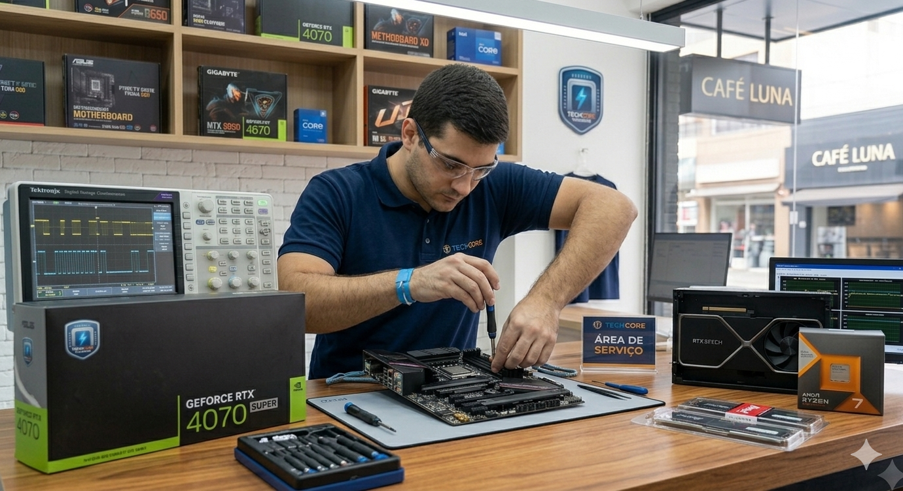

TechCore Hardware
Home
Quem Somos
Serviços
Equipe
Contato
Nossos Serviços
Tudo que voçe precisa para o seu PC em um só lugar.
Ambiente de Montagem

O que a TechCore oferece?
Na TechCore Hardware voce encontra desde a peça a vulsa até o serviço
completo de montagem e manuntenção.Atendemos tanto o cliente que quer montar o PC
dos sonhos quanto empresas que precisam de suporte técnico especializado.
Venda de Componentes
- Placas de vídeo (GPU)
- Processadores (CPU)
- Memórias RAM DDR4 e DDR5
- SSDs Nvme e SATA
- Placas-mãe
- Fontes de alimentação
- Gabinetes e coolers
Montagem de Computadores
- Montagem gamer completa
- Workstation para design e edição de vídeo
- Servidores e NAS
- Mini PC e home theater
- Overclock e tuning
- Water cooling customizado
Manuntenção e Reparo
- Diagnóstico gratuito
- Troca de pasta térmica
- Limpeza e higienização
- Reparo de placa-mãe
- Recuperação de dados
- Atualização de BIOS
Consultoria e Suporte
- Consultoria e build online
- Benchmark e testes de estrsse
- Suporte empresarial (B2B)
- Treinamento em hardware
- Suporte remoto
Tabela de Serviços e Preços
Valores de refrerência - solicite um orçamento personalizada pelo nosso formulário de contato
| Serviços |
Descrição |
Prazo |
Preço |
| Diagnóstico |
Análise completa dos componentes |
1 Hora |
Gratis |
| Limpeza Geral |
Limpeza, troca de pasta e higienização |
2 horas |
R$ 80,00 |
| Montagem Simples |
Montagem com peças do cliente |
1 dia |
R$ 150,00 |
| Montagem completa |
Montagem + testes + overclock básico |
2 dias |
R$ 250,00 |
| Water Cooling |
Instalação de loop customizados |
4 horas |
A consultar |
| Reparo de Placa-mãe |
Diagnóstico e reparo de componentes SMD |
3 a 7 dias |
A consultar |
| Consultoria Online |
Auxílio para montagem via chat ou vídeo |
1 hora |
R$ 60,00 |
Como Funciona?
Do orçamento à entrega em 5 passos simples:
- Contato - Fala conosco por telefone, Whatsapp ou presencialmente.
- Diagnóstico - Avaliamos seu equipamento ou necessidade sem custo.
-
- Orçamento - Enviamos proposta detalhada com prazo e valores.
- Execução - Nossa equipe realiza o serviço com qualidade e cuidado.
- Entrega - Testes finais e entrega com garantia do serviço.
Solicitar Orçamento
2025 TechCore Hardware | Campina Grande PB
Home |
Quem Somos |
Serviços |
Equipe |
Contato